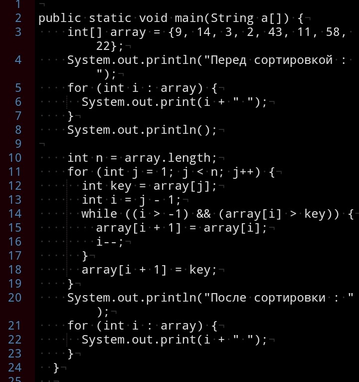

Сортировки вставками всегда делят массив на 2 части — отсортированную и неотсортированную. Из неотсортированной части извлекается любой элемент. Поскольку другая часть массива отсортирована, то в ней достаточно быстро можно найти своё место для этого извлечённого элемента. Элемент вставляется куда нужно, в результате чего отсортированная часть массива увеличивается, а неотсортированная уменьшается. Всё. По такому принципу работают все сортировки вставками.
Самое слабое место в этом подходе — вставка элемента в отсортированную часть массива. На самом деле это непросто и на какие только ухищрения не приходится идти, чтобы выполнить этот шаг.
Реализация на Java :

Выберите, какой алгоритм вы хотите изучить:
Сортировка пузырьком